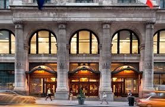

|  |
Almost Complex Geometry Seminar
Department of Mathematics
|
Fall 2020:Join Zoom MeetingMeeting ID: 925 4907 0500 Passcode: 733969 | ||||||||||
9/4: First meeting (organizational)
Abstract: This semester, in addition to regular talks on
research, there will be several survey talks and expositions on research
papers. In this meeting we'll decide on these topipcs and the schedule, and of
course talk math as time permits.
| ||||||||||
9/11: Prof. Luis Fernandez
Abstract: I will describe an explicit formula for the Dirac operator on
an almost hermitian manifold, for a certain one-parameter family of
connections studied by Gauduchon. In certain cases we can express this in
terms of natural differential operators defined in terms of the exterior
differential and the metric. This is joint work with Samuel Hosmer.
| ||||||||||
9/18: no meeting (University closed today)
|
9/25: Aleksandar Milivojevic (Stony Brook University)
Abstract: In Fall 2017 Bora Ferlengez showed us that the space of almost complex structures on the six-sphere (inducing a fixed orientation) has the rational homotopy type of the seven-sphere, or equivalently of RP^7. We were then asked by Ferlengez and Sullivan whether the "RP^7 of octonion almost complex structures" induces a homotopy equivalence when included into this space of all almost complex structures. I will review what this RP^7 of octonion J's is, and how one might think there are in fact two RP^7's of J's in the story; the relation between these two RP^7's will be clarified. Then, after a recap of how to think of the space of almost complex structures as the space of sections of an appropriate CP^3 fiber bundle, I will use an obstruction-theoretic result of Crabb-Sutherland to calculate the fundamental group of the space of almost complex structures to be Z/2. Though this fits with the conjectured homotopy type of RP^7, we will see that the above conjecture is not true. (Prof. Gustavo Granja, speaking in October, in fact has an explicit description of the non-trivial homotopy fiber of the inclusion of RP^7 into the space of J's.) However, it is true that the inclusion of RP^7 into the space of J's induces an isomorphism on rational homology groups, confirming that this is what was detected in the rational context by Ferlengez.
|
10/2: Freid Tong (Columbia U.)
Abstract: A general theme in differential/complex geometry is that curvature positivity conditions imposes strong geometric and topological constraint on the underlying manifold. In this talk, I will discuss a new curvature positivity condition in Hermitian geometry and show that such a condition puts a certain constraint on the underlying manifold. I will discuss various interactions between this curvature condition and other notions in Hermitian geometry. Lastly, I will discuss some examples and potential applications.
|
10/9:
no meeting (department colloquium)
|
10/16: Prof. Gustavo Granja (U. Lisbon)
Abstract: I will explain how a description of the orthogonal complex structures on R^6 in terms of octonion multiplication due to Fiametta Battaglia gives insight into the homotopy type of the connected component of an almost complex structure J on a six manifold M when c_1(J)=0. When M is S^6, one obtains that the space J(S^6) of orthogonal almost complex structures on S^6 sits in a fiber sequence \Omega^7_0 S^7 \to \RP^7 \to J(S^6) and its homotopy groups can be explicitly described in terms of the homotopy groups of S^7.
This is joint work with Aleksandar Milivojevic.
|
10/23: Prof. Gustavo Granja (U. Lisbon) (continued)
Abstract: I will explain how a description of the orthogonal complex struct
ures on R^6 in terms of octonion multiplication due to Fiametta Battaglia gives i
nsight into the homotopy type of the connected component of an almost complex str
ucture J on a six manifold M when c_1(J)=0. When M is S^6, one obtains that the s
pace J(S^6) of orthogonal almost complex structures on S^6 sits in a fiber
sequence
\Omega^7_0 S^7 \to \RP^7 \to J(S^6) and its homotopy groups can be explicitly
described in terms of the homotopy groups of S^7.
This is joint work with Aleksandar Milivojevic.
|
10/30: Prof. Yury Ustinovsky, NYU
Abstract: A hyperkahler manifold is a Riemannian manifold of dimension 4k
and holonomy group contained in Sp(k). Such manifolds are always Kahler and
Ricci-flat and thus are examples of Calabi-Yau manifolds. Complete
asymptotically Euclidean Hyperkahler 4-manifolds are also known as
gravitational instantons and are of a special interest in physics. In 1978,
Gibbons and Hawking suggested an ansatz allowing to construct an infinite
family of complete asymptotically Euclidean Hyperkahler 4-manifolds with
S^1-symmetry, unifying a large zoo of examples known before. In the first
part of the talk, I will review the construction of Gibbons-Hawking and
highlight some of its geometric features. In the second half of the talk I
introduce a more flexible geometric structure, known as Generalized Kahler
(GK) manifold. This structure was introduced independently from several
perspectives, and is motivated by an attempt to incorporate torsion
(magnetic field) into supergravity. By definition, a GK manifold carries two integrable complex structures and a (not necessarily Kahler) bi-Hermitian metric, satisfying certain compatibility conditions. Notably, complex manifolds underlying GK structures are often non-Kahler: for instance such structures exist on (most of) the Hopf surfaces and on parabolic Inoue surfaces. I will explain how one can modify Gibbons-Hawking construction to provide an exhaustive (under mild assumptions) local ansatz for GK 4-manifolds with S^1 symmetry.
The talk is based on a joint work with Jeffrey Streets.
|
11/6: Sam Hosmer
Abstract: In 1958 Andre Weil provided an essentially linear algebraic
proof of the Kahler Identities on a compact Kahler manifold using the
primitive decomposition on forms in a particular degree. Later, these
identities were extended to the Almost Kahler setting by Wilson and Cirici via
an argument relying on the same essential technique of Weil, but involving the
additional components of the exterior derivative that appear in the
non-integrable setting. In 1980 Michelsohn introduced an intrinsically defined
sl2 representation on the complex clifford bundle of an (almost) hermitian
manifold, which corresponds to the classical one through a canonical vector
bundle isomorphism between the exterior bundle and the clifford bundle of a
riemannian manifold. We provide a new proof of the Almost Kahler identities of
Wilson and Cirici by investigating the Lie bracket relations between
Michelsohn's sl2 operators with Dirac Operators on sections of the clifford
bundle defined in terms of the Levi-Civita and Chern connections.
|
11/13: Raymond Puzio
Abstract: Using twistor theory, Moraru showed that every solution of a certain s
ystem of PDEs on the parameter space of irreducible plane conics gives rise to a self-
dual conformal structure. Later on, Dunajski and Tod used techniques classical invari
ant theory to write these equations explicitly and exhibit solutions. Last semester i
n this seminar, Marlon de Oliveira Gomes described this construction and used it to pr
oduce metrics on connected sums of manifolds. There is also a similar construction on
the parameter space of quartic curves which involves a simpler set of PDEs.
After a few words on how these equations arise, we will consider two topics. Firstly,
the equations are overdetermined (six equations for a single unknown) so it is not im
mediately obvious what initial data one can freely choose to specify a solution. We w
ill discuss how one can determine consistency conditions for PDE systems, then apply t
hem to the system on the space of quartics.
Secondly, the parameter spaces on which our PDEs live are coset spaces and the equatio
ns are invariant. However, this invariance may not be immediately be invariant from t
he coordinate expressions in Dunajski and Tod's paper. After describing the quadratic
and cubic invariant forms on SL(3), we will combine these invariants with invariant v
etor fields to re-express the equations which makes their invariance manifest.
Finally, we will end with some remarks and observations on how such a reformulation may allo
w one to bring Lie theory to bear on the study of these equations.
|
11/20: Prof. Teng Huang (by shared video and slides)
Abstract: We introduce a class of closed almost Kahler manifolds, called
the special symplectic hyperbolic manifold. Those manifolds include Kahler
hyperbolic manifolds. We show that the Euler number of a special symplectic
manifold satisfies the inequality that (-1)^n times the Euler characteristic
is positive.
|
12/4: Prof. Joana Cirici (U. of Barcelona)
Abstract: Dolbeault cohomology is a fundamental cohomological invariant for complex manifolds. This analytic invariant is connected to de Rham cohomology by means of a spectral sequence, called the Frolicher spectral sequence. In this talk, we will explore this connection from a multiplicative viewpoint: the main objective is to understand how products (and higher products) on de Rham cohomology behave with respect to the bigradings of the Frolicher spectral sequence. For that, I will explain a filtered version of Kadeishvili's homotopy transfer theory, which endows the cohomology of any dg-algebra with an A-infinity structure. This is joint work with Anna Sopena.
|